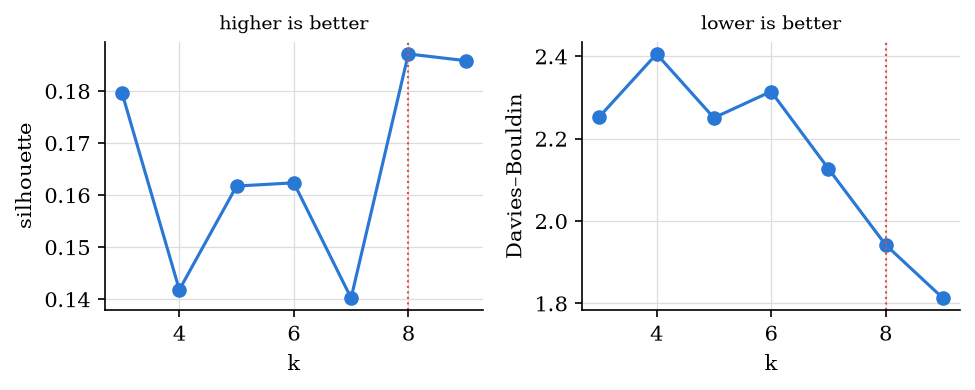
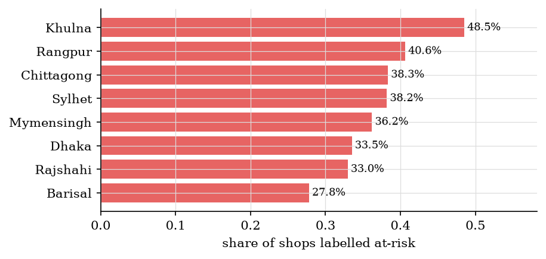

Smart Retail Intelligence for Bangladesh’s FMCG Distribution Network
Abstract: Bangladesh’s fast-moving consumer goods (FMCG) distribution network spans roughly 720,000 retail outlets across all 64 districts, yet allocation planning is still largely done on intuition, and industry estimates place the resulting waste at 15–25% of distribution capacity. In this project we apply an integrated supervised, unsupervised, and clustering approach to the recently released Comprehensive Retail Network Dataset of Bangladesh, which contains 719,817 GPS-tagged outlets, a 42-SKU product catalogue, and monthly sales targets for 17 products. We engineer 48 spatial and structural features per shop, discover __BEST_K__ interpretable shop archetypes with K-Means (cross-checked with hierarchical clustering and DBSCAN), benchmark four regression models for monthly sales-target prediction (best test R² __REG_BEST_R2__ with XGBoost against a linear baseline of 0.02), train a target-miss risk classifier reaching ROC-AUC __CLF_BEST_AUC__, and rank 71,982 anomalous shops for fraud/data-error triage using per-cluster Isolation Forest and Local Outlier Factor. Hyperparameters of the winning models are selected by Bayesian optimization (Optuna TPE), and all headline metrics are reported with 5-fold cross-validation. The full pipeline is containerised and additionally re-implemented on a Hadoop HDFS + Apache Spark cluster with a division-partitioned warehouse, whose row counts exactly reproduce the reference implementation. Beyond the models, the analysis surfaces a data-quality finding of direct business value: 85,167 book entries with no recorded shop attributes form their own “ghost-shop” archetype — a machine-generated audit list for the duplicate and fraudulent entries that motivated the study.
1. Introduction
Fast-moving consumer goods reach Bangladeshi consumers through one of the densest retail networks in the world: small shops, kiosks, and wholesalers distributed across 8 administrative divisions, 64 districts (zila), and 515 sub-districts (upazila). Distributors such as Unilever Bangladesh, ACI, Square Consumer, and Pran-RFL must decide, shop by shop and month by month, how much product to allocate and how often a field representative should visit. In practice these decisions are still made largely on intuition and historical habit. The consequences are well documented in the industry: urban shops are over-stocked while rural shops face stock-outs, target shortfalls are identified only at quarter-end when the quarter is already lost, and an unknown share of outlets in any distributor’s books are duplicates, ghost shops, or fraudulent entries.
Until recently this problem could not be studied quantitatively at national scale, because no public data described the network. That changed with the release of the Comprehensive Retail Network Dataset for Bangladesh (Shahin, Swarna, and Farid 2025), which provides GPS coordinates, structural attributes, and monthly sales targets for hundreds of thousands of outlets under a CC BY 4.0 license. To the best of our knowledge, this dataset is still largely unexploited in the literature, and this project is among the first attempts to apply an integrated machine-learning pipeline to it.
In this study we pose four research questions. RQ1: what natural archetypes exist among the outlets? RQ2: can a shop’s monthly sales target be predicted from its location, type, importance, and neighbourhood density? RQ3: can shops that will miss their targets be identified in advance? RQ4: which shops behave anomalously compared with their peers? We answer them with, respectively, clustering (K-Means, hierarchical, DBSCAN), regression (a linear baseline against Random Forest, XGBoost, and LightGBM, explained with SHAP), classification (logistic regression, Random Forest, and XGBoost with SMOTE class balancing), and per-cluster anomaly detection (Isolation Forest and Local Outlier Factor). Hyperparameters of the winning models are chosen by Bayesian optimization, all headline metrics are cross-validated, and the entire pipeline is reproducible with one command in Docker. Because the course concerns big data analytics, we additionally re-implement the pipeline on distributed infrastructure — a Hadoop HDFS storage layer and an Apache Spark cluster with Spark MLlib — and compare the two execution paths.
The remainder of this report is organised as follows. Section 2 reviews the literature on the methods we employ and their applications in retail analytics. Section 3 describes the data, the cleaning decisions (including a measured treatment of missing values), the engineered features, and an exploratory analysis. Section 4 presents the four methodologies and their experimental results, together with the distributed implementation. Section 5 concludes with findings, recommended actions for a distributor, limitations, and future work. Three appendices describe the data dictionary, the files accompanying this report, and how to reproduce every number in it.
2. Review of Literature
The methods used in this project are established tools of data mining, and we review them alongside their uses in retail and distribution analytics. Customer and outlet segmentation is one of the oldest applications of clustering in commerce; the K-Means algorithm traces back to Lloyd (1982), while the silhouette coefficient (Rousseeuw 1987) and the Davies–Bouldin index (Davies and Bouldin 1979) remain the standard internal criteria for choosing the number of clusters when no ground truth exists. Density-based clustering (DBSCAN; Ester et al. 1996) offers a complementary view that does not presuppose the number of clusters and can flag noise points, which is why we use it as a structural cross-check rather than a primary method.
For tabular prediction problems, ensembles of decision trees are the dominant approach. Random Forests (Breiman 2001) reduce variance by bagging many decorrelated trees, while gradient-boosted trees fit trees sequentially to the residuals of their predecessors; XGBoost (Chen and Guestrin 2016) and LightGBM (Ke et al. 2017) are the two most widely used implementations and consistently win applied competitions on structured data. A known criticism of boosted ensembles is their opacity, addressed by SHAP (Lundberg and Lee 2017), which decomposes each individual prediction into additive per-feature contributions with game-theoretic guarantees; we use the Tree-SHAP variant. Class imbalance in classification is handled with SMOTE (Chawla et al. 2002), which synthesises minority-class examples by interpolation; following standard practice, we apply it strictly inside training folds to avoid information leakage. For anomaly detection we combine Isolation Forest (Liu, Ting, and Zhou 2008), which isolates anomalies with random axis-parallel splits, and the Local Outlier Factor (Breunig et al. 2000), which compares each point’s local density with that of its neighbours; the two catch different failure shapes. Hyperparameter search is performed with the Tree-structured Parzen Estimator, a Bayesian optimization method, as implemented in Optuna (Akiba et al. 2019). All reference implementations come from scikit-learn (Pedregosa et al. 2011) and the imbalanced-learn extension.
On the infrastructure side, the Hadoop Distributed File System (Shvachko et al. 2010) provides replicated block storage across data nodes, and Apache Spark (Zaharia et al. 2016) has become the de-facto engine for distributed data processing, with MLlib (Meng et al. 2016) as its machine-learning library. Our design follows the common industrial pattern in which distributed engines handle storage and data preparation while a single powerful node trains models whose algorithms are not available in MLlib.
The dataset itself is described by Shahin, Swarna, and Farid (2025), who document its collection between February 2022 and October 2024, its anonymisation, and its data-quality characteristics, including a 13.58% missing-GPS rate that our own profiling reproduces exactly. To the best of our knowledge, no published work has yet combined clustering, regression, classification, and anomaly detection on this dataset within one pipeline, which is the gap this project addresses.
3. Data
We use the publicly available dataset titled “Comprehensive Retail Network Dataset of Bangladesh” from Mendeley Data (Shahin, Swarna, and Farid 2025; DOI 10.17632/mgzvngzng2.1, article DOI 10.1016/j.dib.2025.112326, CC BY 4.0). In this section we describe the data, the cleaning decisions, the engineered features, and an exploratory analysis. All statistics in this section are computed from the actual files by our profiling code, not copied from the dataset paper.
3.1 Data Description
The dataset comprises three interlinked comma-separated files, downloaded on 5 July 2026. Their contents and sizes are summarised in Table 1, and the full column dictionary of the shop file is given in Table A.1 of Appendix A.
Table 1: The three files of the dataset
| File | Rows | Content |
|---|---|---|
shop_info_with_geo.csv | 832,881 | One record per shop visit registration: GPS coordinates, business type (12 categories), style (3), company importance tier (3), place nature, administrative location (division / zila / upazila), and operational fields. |
product_target_for_shop.csv | 853,732 | Monthly sales target for 17 products per shop (prod_1 … prod_17) and their monthly Total. |
product_info.csv | 42 | SKU catalogue: 42 variants over 24 base products, 5 brands, and 9 flavour/variant types, with shop-style and importance-tier price columns, packaging, and volumes. |
Three properties of the data required particular care. First, the shop identifier shop_code mixes purely numeric strings with hexadecimal-like strings; if a file slice happens to contain only numeric codes, a naïve loader infers an integer type and every subsequent join fails silently. Our loader therefore pins the identifier to a string type. Second, the two large files are ordered differently, so row-aligned sampling of both produces zero join overlap; any subsample must be joined by key. Third, 20,849 shop codes (2.4%) appear more than once in the targets file, sometimes once with values and once entirely empty; we de-duplicate keeping the valued record.
3.2 Data Cleaning and Handling Missing Values
Table 2 summarises the cleaning funnel, which is also visualised in Fig. 7. Starting from 832,881 raw records, all rows possess a unique shop code. 113,064 rows (13.58%) have no GPS coordinates at all: their latitude and longitude cells are empty and their geometry field is literally POINT EMPTY, meaning the coordinates were never captured at survey time — the same missing rate the dataset authors report. We removed these rows rather than imputing them, since an invented location would poison every spatial feature; notably, the remaining count of 719,817 equals the outlet count published with the dataset exactly, and zero non-null coordinates fall outside the Bangladesh bounding box (20.5–26.7°N, 88.0–92.7°E). Joining the de-duplicated targets file attaches a monthly target to 613,660 shops (85.3% of the clean set).
Table 2: The preprocessing funnel
| Stage | Shops | Rule |
|---|---|---|
| 1. Raw shop records | 832,881 | — |
| 2. Unique shop codes | 832,881 | drop duplicated shop_code (none present) |
| 3. Valid GPS inside Bangladesh | 719,817 | coordinates present and within the national bounding box |
| 4. Joined with a sales target | 613,660 | left join on shop_code, valued rows preferred |
The categorical attributes exhibit a striking joint missingness pattern: exactly 85,167 records (10.23%) lack the business type, and the same records simultaneously lack style, importance, and organizer. Rather than deleting these shops or refilling the gaps, we keep them under an explicit Unknown level, for a reason that Section 4.1 will make concrete: the clustering isolates precisely this population as its own archetype, turning the missingness itself into the ghost-shop audit list the project was motivated by. The nearly empty visit_target column (99.69% missing) was dropped.
Because refilling missing categoricals from spatial neighbours is a natural suggestion, we tested it empirically rather than dismissing it. For shops whose attributes are known, we hid the true value and predicted it from the majority vote of the 10 nearest neighbours (haversine distance). Table 3 shows the outcome against the majority-class baseline. Location-determined fields are nearly perfectly recoverable, and shop_style carries real spatial signal; but shop_type would be wrong for one shop in three, and shop_importance imputation is worse than blind majority guessing. We therefore impute only the geographic fields (and optionally style, at a ≥70% neighbour-agreement threshold, behind an explicit flag with per-row indicator columns), and never the business attributes. A full-pipeline sensitivity experiment with imputation enabled improved the supervised metrics (risk ROC-AUC 0.857 → 0.881) but collapsed the archetype taxonomy from 8 clusters to 3 by blending the ghost-shop segment into ordinary clusters — hiding the population the audit use-case needs — so the reference pipeline keeps imputation off.
Table 3: 10-nearest-neighbour imputation accuracy on held-out known shops
| Attribute | 10-NN majority accuracy | Majority-class baseline | Decision |
|---|---|---|---|
| zila (district) | 99.8% | 11.3% | impute |
| shop_style | 96.5% | 65.2% | impute only at ≥70% agreement (flagged) |
| shop_type | 62.5% | 51.6% | never — kept as Unknown |
| shop_importance | 86.9% | 87.9% | never — below baseline |
3.3 Feature Engineering
From the cleaned records we engineer 48 model features per shop, listed by group in Table 4. The spatial features operationalise the over-stock/stock-out hypothesis of the proposal: neighbourhood density is computed with a BallTree under the haversine metric, which answers all 719,817 radius queries in seconds (O(n log n) rather than the O(n²) of a pairwise scan), and centrality is the great-circle distance to the centroid of the shop’s district. Low-cardinality categoricals are one-hot encoded with Unknown as an explicit level. The monthly target Total is used exclusively as the supervised label and never as a model input.
Table 4: Engineered features (48 columns)
| Group | Features | Computation |
|---|---|---|
| Neighbourhood density | density_500m, density_1km, density_5km |
BallTree (haversine) neighbour counts within each radius, shop itself excluded |
| Centrality | dist_to_district_centre_km |
great-circle distance to the district’s shop centroid |
| Product mix | n_products_targeted |
number of the 17 products with a positive target |
| Position | latitude, longitude | validated GPS |
| Structure (one-hot) | type (12), style (3), importance (3), place nature, division | indicator per level; Unknown kept explicit |
3.4 Exploratory Data Analysis
Fig. 1 shows the geographic distribution of the clean outlets by division: Dhaka dominates with 220,775 shops, followed by Chittagong (128,751), with Barisal the smallest division (35,700; a further 138 clean shops have no recorded division). Fig. 2 shows the distribution of the monthly total target among the 613,660 joined shops, which is heavily right-skewed: the median is 14.1 while the mean is 28.9, and the raw targets file reaches a maximum of 91,283 — a small population of wholesale-style outlets carries targets three orders of magnitude above the typical shop. This skew matters throughout Section 4: it is why squared-error regression metrics are volatile across resampling folds, and why anomaly detection must compare shops only with their own kind.

Fig. 1: Clean outlets per division (719,817 shops)

Fig. 2: Distribution of the monthly total target, clipped at the 99th percentile

Fig. 7: The preprocessing funnel from raw records to model-ready shops
4. Methodologies and Experimental Results
In this section we present the four analytical phases and the results obtained, one research question per subsection, followed by the distributed implementation. All experiments use a fixed random seed (42) end to end; supervised models are evaluated on a held-out 20% test split, and additionally with 5-fold cross-validation on the winning models. All code is written in Python 3.11 and runs inside Docker containers; the source layout and reproduction commands are given in Appendices B and C.
4.1 Unsupervised Learning: Shop Archetypes (RQ1)
To discover natural outlet archetypes we standardised the 48 features to zero mean and unit variance and applied K-Means (Lloyd 1982) for every k from 3 to 9, with 10 random restarts per k. Since no ground-truth segmentation exists, each k was scored with two independent internal criteria: the silhouette coefficient (Rousseeuw 1987; computed on a 10,000-shop subsample for tractability) and the Davies–Bouldin index (Davies and Bouldin 1979) on all rows. Fig. 3 plots both criteria; they agree on k = __BEST_K__ (silhouette 0.187, Davies–Bouldin 1.94). As structural cross-checks we ran agglomerative (Ward) clustering on a 20,000-shop subsample, which corroborates the structure (silhouette 0.145), and DBSCAN (Ester et al. 1996) at default settings, which collapses to a single cluster with 98.7% of points labelled noise. We report the DBSCAN outcome rather than hiding it, because it is informative: the retail network is a dense continuous fabric, not a set of separated islands, which also explains why the silhouette is modest — archetypes overlap at their boundaries.

Fig. 3: Model selection for k. Both criteria favour k = __BEST_K__ (dotted line)
Table 5 profiles the eight archetypes by their median feature values, and Fig. 4 shows their sizes. The taxonomy is directly interpretable. Cluster 4 (28.5% of shops) is the typical semi-urban outlet of the Dhaka belt. Cluster 3 is the metro-Dhaka core: a median of 869 neighbours within one kilometre, only 8.2 km from the district centre, with elevated targets. Cluster 2 is small (1.4%) but is the key-account tier — its median monthly target of 90.0 is six to eight times any other archetype’s. Most notably, cluster 1 (85,167 shops, 11.8%) is exactly the population with Unknown business attributes and zero targeted products: the data-poor “ghost-shop” segment. The clustering thus converted a data-quality gap into a machine-generated audit list, which we consider a principal finding of the project.
Table 5: Cluster profiles (medians over the full dataset)
| Cluster | Density 1 km | Dist. to centre (km) | Products targeted | Total target | Shops | Share | Dominant division |
|---|---|---|---|---|---|---|---|
| 0 | 56 | 16.6 | 5 | 11.1 | 137,040 | 19.0% | Rajshahi |
| 1 | 83 | 13.9 | 0 | 14.2 | 85,167 | 11.8% | Dhaka (ghost segment) |
| 2 | 104 | 14.5 | 7 | 90.0 | 10,209 | 1.4% | Dhaka (key accounts) |
| 3 | 869 | 8.2 | 10 | 25.4 | 88,269 | 12.3% | Dhaka (metro core) |
| 4 | 66 | 14.4 | 6 | 15.2 | 205,287 | 28.5% | Dhaka |
| 5 | 44 | 18.9 | 6 | 13.2 | 46,240 | 6.4% | Mymensingh |
| 6 | 91 | 15.1 | 6 | 10.5 | 111,395 | 15.5% | Chittagong |
| 7 | 54 | 18.8 | 5 | 11.2 | 36,210 | 5.0% | Sylhet |

Fig. 4: Archetype sizes over the full dataset
4.2 Supervised Learning: Sales-Target Regression (RQ2)
The 613,660 shops with a target were split 80/20 into training and test sets. We benchmarked a linear regression baseline (with standardised inputs) against Random Forest (Breiman 2001), XGBoost (Chen and Guestrin 2016), and LightGBM (Ke et al. 2017). In addition, the hyperparameters of the XGBoost candidate were selected by Bayesian optimization with the Tree-structured Parzen Estimator (Optuna; Akiba et al. 2019): 30 trials, each scored by 3-fold cross-validated RMSE on a 100,000-shop training subsample, searching over the number of trees, depth, learning rate, subsampling ratios, minimum child weight, and L2 regularisation. The tuned model competes in the benchmark as its own candidate so that the default-versus-tuned comparison remains visible. Table 6 records the test-set performance of all candidates.
Table 6: Prediction performance of the regression models (20% held-out test set)
| Model | RMSE | MAE | R² |
|---|
__REG_NARRATIVE__
Because the target is heavily right-tailed (Section 3.4), single-split metrics can flatter or punish a model depending on where a handful of extreme wholesale outlets land. We therefore cross-validated with 5 folds. __REG_CV_TEXT__ This stability analysis is, in our view, as informative as the point estimates: it quantifies how strongly a few extreme outlets dominate squared-error metrics on this dataset.
Fig. 5 shows the SHAP (Lundberg and Lee 2017) feature attribution of the winning model. Product-mix breadth (n_products_targeted) and the top importance tier dominate, followed by micro-location: density within 500 m, the raw coordinates, and distance to the district centre. Location and assortment — not shop type alone — drive expected volume, supporting the proposal’s premise that intuition-based allocation leaves measurable signal unused.

Fig. 5: Top-12 SHAP feature attributions of the winning regression model
4.3 Supervised Learning: Target-Miss Risk Classification (RQ3)
The dataset contains assigned targets rather than realised sales, so a direct “missed the target” label cannot be constructed. We therefore define an explicit proxy, stated wherever results appear: a shop is labelled at-risk when its total target is below 80% of the median target of its peer group, defined as the same archetype (Section 4.1) and the same business type — that is, when it materially under-indexes shops that look like it. The base rate is 36.6%. Because the classes are imbalanced, SMOTE (Chawla et al. 2002) is applied inside an imbalanced-learn pipeline so that synthetic oversampling occurs strictly within training folds; the test set is never resampled. We trained logistic regression, Random Forest, and XGBoost, with the XGBoost hyperparameters again selected by Optuna TPE (30 trials, 3-fold cross-validated ROC-AUC on a 100,000-shop subsample, SMOTE inside every fold). Table 7 reports the test-set results, and Fig. 6 shows how the labelled risk distributes across divisions, from 27.8% in Barisal to 48.5% in Khulna — a ready-made geographic priority order for field teams.
Table 7: Prediction performance of the risk classifiers (20% held-out test set)
| Model | ROC-AUC | F1 | Precision | Recall |
|---|
__CLF_NARRATIVE__ __CLF_CV_TEXT__

Fig. 6: Share of shops labelled at-risk, by division
4.4 Unsupervised Learning: Anomaly Detection (RQ4)
To surface shops that behave unlike their peers we fitted Isolation Forest (Liu, Ting, and Zhou 2008; 200 trees) and the Local Outlier Factor (Breunig et al. 2000; 20 neighbours) separately within each archetype, never globally — a rural kiosk scored against metro superstores would always appear anomalous, telling the analyst nothing. Each method’s raw score is converted to a percentile rank within its cluster, and the combined score is the mean of the two ranks, so a shop is flagged only when both detectors, each sensitive to a different failure shape, agree. All 719,817 shops were scored, and the top decile (71,982 shops) is exported with full context for manual triage into three buckets: data errors (wrong coordinates, duplicate entries), fraud candidates (targets or importance inconsistent with the surroundings), and hidden opportunities (thriving shops in thin markets). Shops that simultaneously appear in the RQ3 high-risk list are recommended as the first field visits.
4.5 Distributed Implementation on Hadoop and Spark
Because the course concerns big data analytics, we re-implemented the pipeline on distributed infrastructure and compared the two execution paths. The storage layer is a Hadoop HDFS cluster (Shvachko et al. 2010) with one namenode and nine datanodes — one per data partition: the eight divisions plus the Unknown bucket — running in Docker with the raw files stored at replication factor 2. On top of it, an Apache Spark standalone cluster (Zaharia et al. 2016) executes the same five phases with Spark SQL and MLlib (Meng et al. 2016): distributed cleaning and feature engineering (with a grid-window approximation for neighbour densities), K-Means and Bisecting K-Means, regression and weighted classification with gradient-boosted trees, and a centroid-distance anomaly ranking. MLlib does not provide XGBoost, SHAP, SMOTE, Isolation Forest, or LOF, so the distributed lane uses the nearest available equivalents while the scikit-learn lane remains the reference for the exact algorithms of the proposal.
Two results validate the design. First, the distributed data preparation reproduces the reference counts exactly (832,881 → 719,817 → 613,660), cross-validating two independent implementations of every cleaning rule. Second, we rewrote the warehouse Hive-style, partitioned by division; Spark’s physical plans then show partition pruning (PartitionFilters: [division = Khulna]), and a regional run over Khulna and Barisal processed 115,742 shops in 598 seconds against 1,112 seconds for the national run, reading only the requested partitions. Table 8 summarises the comparison. The runtime comparison also illustrates an honest engineering lesson: at 206 MB the dataset fits in memory, and the single-node scikit-learn pipeline completes in roughly six minutes end to end — distributed execution pays off at data volumes larger than this project’s, and the correct architecture (which we follow) is distributed storage and preparation feeding a single-node model-training stage.
Table 8: Reference versus distributed execution
| Aspect | scikit-learn (reference) | Hadoop + Spark (distributed) |
|---|---|---|
| Storage | local parquet volumes | HDFS, replication 2, division-partitioned warehouse |
| Clean shops / with target | 719,817 / 613,660 | 719,817 / 613,660 (identical) |
| Clustering | K-Means, best k = 8 (silhouette 0.187) | MLlib K-Means, best k = 3 (silhouette 0.295, grid densities) |
| Regression / classification | XGBoost R² __REG_BEST_R2__ / AUC __CLF_BEST_AUC__ | GBT R² 0.313 / AUC 0.821 |
| National runtime | ≈ 6 min (one node) | 1,112 s (1 worker, 4 cores) |
| Regional run (Khulna + Barisal) | — | 598 s over 115,742 shops via partition pruning |
5. Conclusion
This project applied an integrated supervised, unsupervised, and clustering pipeline to Bangladesh’s national retail dataset and answered all four research questions posed in the proposal. The 719,817 analysable outlets organise into __BEST_K__ interpretable archetypes, including a metro core, a small key-account tier carrying six-to-eight-fold targets, and — most consequentially — an 85,167-shop segment defined by jointly missing attributes and empty product mixes: a machine-generated candidate list for the duplicate and ghost entries that motivated the study. Monthly sales targets are predictable well beyond a linear baseline (test R² __REG_BEST_R2__ versus 0.02), with SHAP attributing the signal to assortment breadth, importance tier, and micro-location; the 5-fold analysis shows that squared-error metrics on this heavy-tailed target carry substantial fold-to-fold variance, which we report rather than hide. The peer-relative risk classifier reaches ROC-AUC __CLF_BEST_AUC__ and orders the divisions from 27.8% to 48.5% labelled risk, giving field teams a priority map; and per-cluster anomaly detection produces a ranked 71,982-shop audit list. The pipeline is deterministic, fully containerised, covered by 46 automated tests, and additionally re-implemented on Hadoop HDFS and Spark MLlib, where matching row counts cross-validate the preparation and partition pruning demonstrates genuinely regional distributed processing.
For a distributor, our recommended actions are: audit the ghost-shop archetype and the 113,064 GPS-less book entries first, as the cheapest strike against the estimated 15–25% distribution waste; rebalance targets where the model and the book disagree strongly in either direction; field-verify the anomaly top decile per division, prioritising shops that are simultaneously high-risk; and refresh the pipeline quarterly, which requires one command.
The main limitations follow from the data. The dataset carries assigned targets rather than realised sales, so the RQ3 label is a documented proxy; with actual sales the identical pipeline retrains into a true will-miss-next-quarter model. The modest silhouette reflects a genuinely continuous retail fabric rather than poor modelling, but it means archetype boundaries are soft. Bayesian tuning on a subsample did not dominate strong defaults on the single split — a finding we report with both candidates side by side — and future work should tune on the full training set with a robust objective (for example, quantile loss) to handle the extreme target tail, alongside enriching the features with census covariates and road-distance measures in place of great-circle distances.
References
Akiba, T., Sano, S., Yanase, T., Ohta, T., and Koyama, M. (2019). Optuna: A next-generation hyperparameter optimization framework. In Proceedings of the 25th ACM SIGKDD International Conference on Knowledge Discovery & Data Mining, 2623–2631.
Breiman, L. (2001). Random forests. Machine Learning, 45(1), 5–32.
Breunig, M. M., Kriegel, H.-P., Ng, R. T., and Sander, J. (2000). LOF: Identifying density-based local outliers. In Proceedings of the 2000 ACM SIGMOD International Conference on Management of Data, 93–104.
Chawla, N. V., Bowyer, K. W., Hall, L. O., and Kegelmeyer, W. P. (2002). SMOTE: Synthetic minority over-sampling technique. Journal of Artificial Intelligence Research, 16, 321–357.
Chen, T., and Guestrin, C. (2016). XGBoost: A scalable tree boosting system. In Proceedings of the 22nd ACM SIGKDD International Conference on Knowledge Discovery and Data Mining, 785–794.
Davies, D. L., and Bouldin, D. W. (1979). A cluster separation measure. IEEE Transactions on Pattern Analysis and Machine Intelligence, PAMI-1(2), 224–227.
Ester, M., Kriegel, H.-P., Sander, J., and Xu, X. (1996). A density-based algorithm for discovering clusters in large spatial databases with noise. In Proceedings of the Second International Conference on Knowledge Discovery and Data Mining, 226–231.
Ke, G., Meng, Q., Finley, T., Wang, T., Chen, W., Ma, W., Ye, Q., and Liu, T.-Y. (2017). LightGBM: A highly efficient gradient boosting decision tree. In Advances in Neural Information Processing Systems 30, 3146–3154.
Liu, F. T., Ting, K. M., and Zhou, Z.-H. (2008). Isolation forest. In Proceedings of the Eighth IEEE International Conference on Data Mining, 413–422.
Lloyd, S. P. (1982). Least squares quantization in PCM. IEEE Transactions on Information Theory, 28(2), 129–137.
Lundberg, S. M., and Lee, S.-I. (2017). A unified approach to interpreting model predictions. In Advances in Neural Information Processing Systems 30, 4765–4774.
Meng, X., Bradley, J., Yavuz, B., Sparks, E., Venkataraman, S., Liu, D., et al. (2016). MLlib: Machine learning in Apache Spark. Journal of Machine Learning Research, 17(34), 1–7.
Pedregosa, F., Varoquaux, G., Gramfort, A., Michel, V., Thirion, B., Grisel, O., et al. (2011). Scikit-learn: Machine learning in Python. Journal of Machine Learning Research, 12, 2825–2830.
Rousseeuw, P. J. (1987). Silhouettes: A graphical aid to the interpretation and validation of cluster analysis. Journal of Computational and Applied Mathematics, 20, 53–65.
Shahin, M. M. H., Swarna, J. F., and Farid, D. M. (2025). Comprehensive retail network dataset for Bangladesh: Shop-level sales and location data. Data in Brief. DOI: 10.1016/j.dib.2025.112326; dataset DOI: 10.17632/mgzvngzng2.1.
Shvachko, K., Kuang, H., Radia, S., and Chansler, R. (2010). The Hadoop distributed file system. In Proceedings of the IEEE 26th Symposium on Mass Storage Systems and Technologies, 1–10.
Zaharia, M., Xin, R. S., Wendell, P., Das, T., Armbrust, M., Dave, A., et al. (2016). Apache Spark: A unified engine for big data processing. Communications of the ACM, 59(11), 56–65.
Appendix A: Column dictionary of the shop file
Table A.1: Variables of shop_info_with_geo.csv (832,881 rows)
| Variable | Type | Missing | Distinct | Definition |
|---|---|---|---|---|
| shop_code | string | 0% | 832,881 | Unique shop identifier (join key) |
| organizer | categorical | 10.23% | 62 | Field organizer who registered the shop |
| place_nature | categorical | 13.39% | 10 | Nature of the location (market, roadside, …) |
| place_name | text | 10.23% | 86,217 | Free-text location name (not used as a feature) |
| freq_type | categorical | 10.23% | 1,277 | Visit-frequency classification |
| shop_type | categorical | 10.23% | 12 | Business type |
| shop_style | categorical | 10.23% | 3 | Appearance-based class |
| shop_importance | categorical | 10.23% | 3 | Company importance tier |
| ss_importance | categorical | 10.23% | 7 | Detailed importance rating |
| visit_target | numeric | 99.69% | 27 | Planned monthly visits (dropped) |
| latitude | numeric | 13.58% | 538,651 | GPS latitude |
| longitude | numeric | 13.58% | 312,967 | GPS longitude |
| geometry | WKT | 0% | 703,324 | POINT (lon lat); POINT EMPTY when GPS absent |
| zila | categorical | 13.59% | 64 | District |
| upazila | categorical | 13.59% | 515 | Sub-district |
| division | categorical | 13.59% | 8 | Administrative division |
Appendix B: Files accompanying this report
| Path | Content |
|---|---|
src/smart_retail/ | Python package: config, data loaders, profiling, feature engineering, the four model phases, Bayesian tuning + CV, pipeline CLI, report generator |
dashboard/app.py | Interactive Streamlit dashboard (8 views, filters, live cluster topology) |
spark_jobs/ | Distributed jobs: HDFS upload, ETL, division-partitioned warehouse, 5-phase MLlib pipeline |
docker-compose.yml, Dockerfile, Dockerfile.spark | Container definitions: pipeline, dashboard, tests, HDFS namenode/datanodes, Spark master/workers |
tests/ (46 tests) | Automated tests running against slices of the real dataset |
reports/metrics.json, reports/dataset_profile.json | All experimental numbers in this report, machine-readable |
data/processed/*.parquet, models/*.joblib | Pipeline artifacts: features, clusters, predictions, risk scores, anomalies; trained models |
Appendix C: Source code and reproduction
All source code is included in the submission package. Every number in this report reproduces with a fixed seed:
make build && make pipeline — the five-phase reference pipeline (≈6 minutes);
python -m smart_retail.pipeline --phases 3,4 --tune --cv — Bayesian tuning and 5-fold cross-validation;
WORKERS=2 DATANODES=9 make spark-up && make spark-partition && make spark-pipeline — the distributed lane;
make test — the 46-test suite; make dashboard — the interactive dashboard on port 8501.